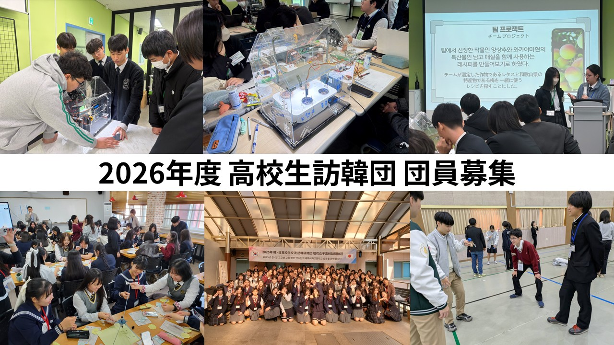
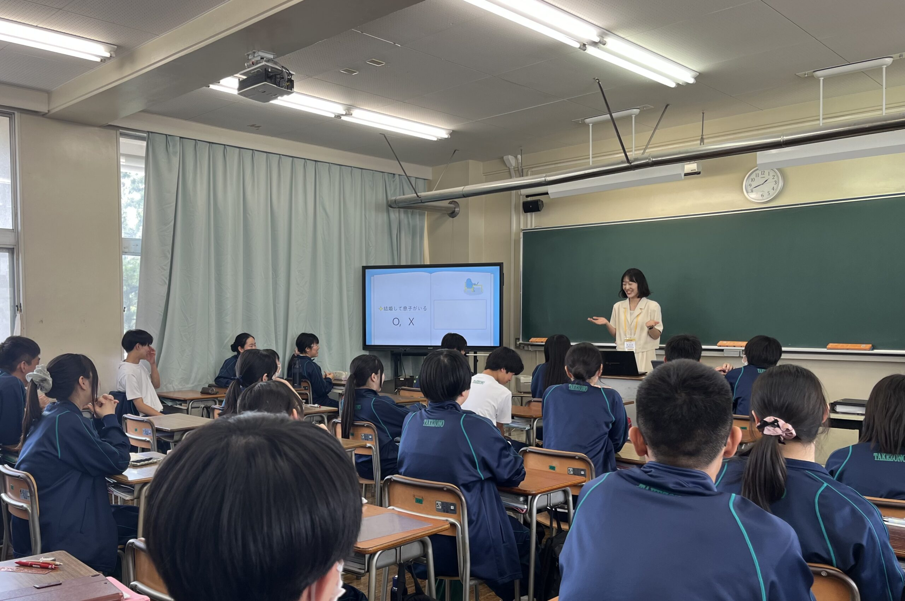
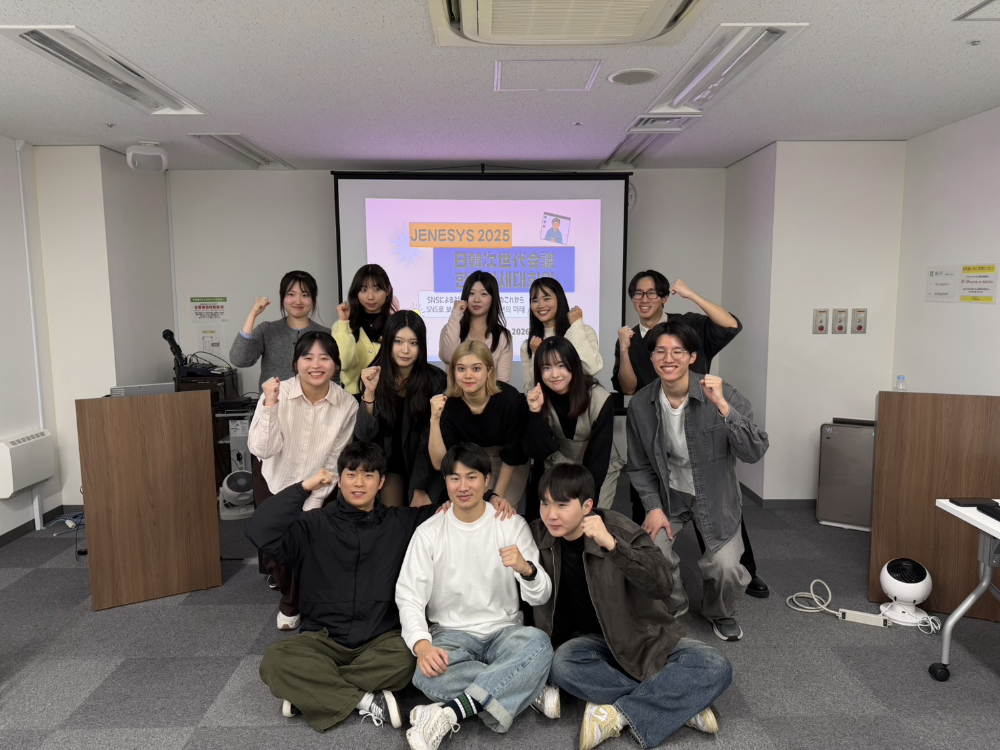
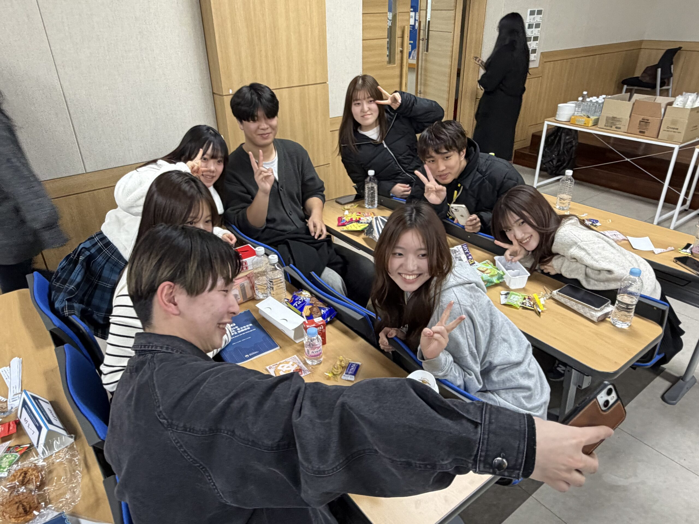
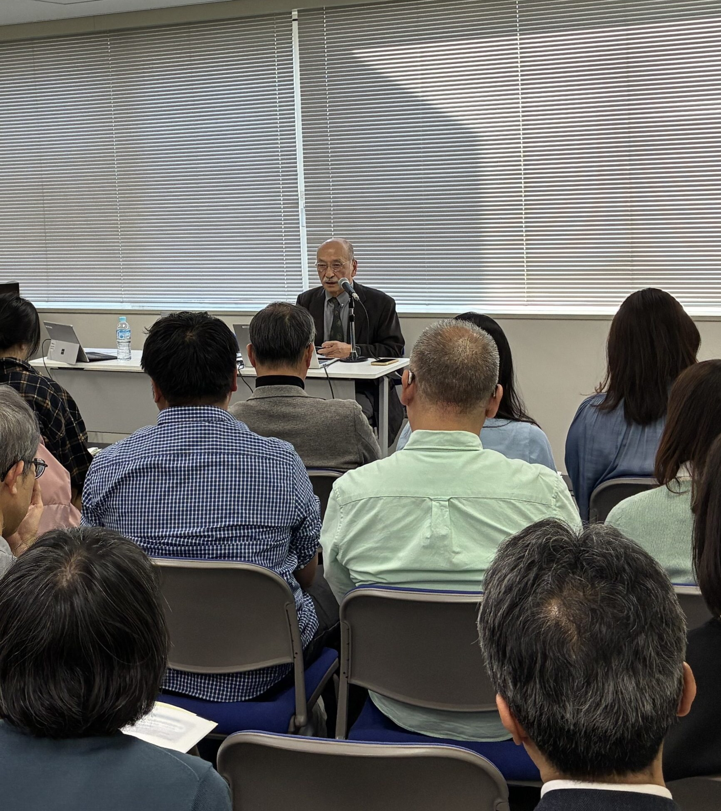
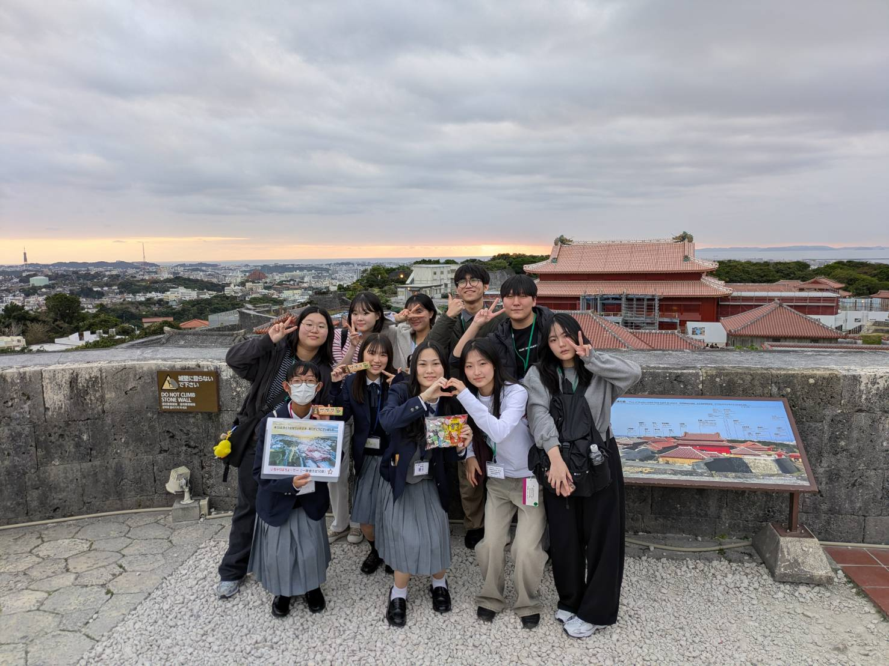
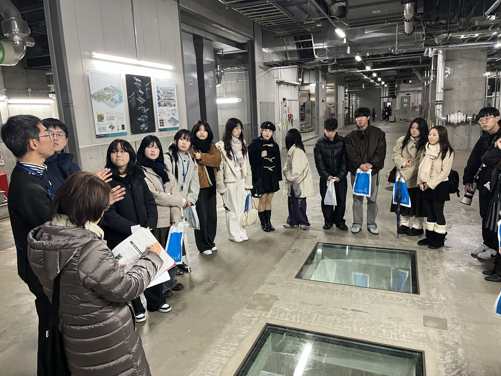
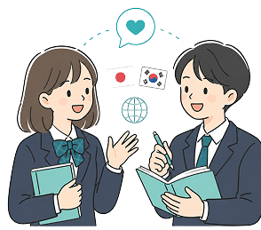
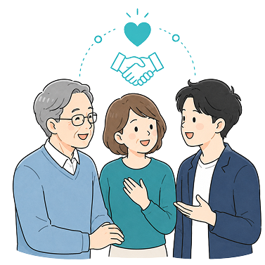

OUR ACTIVITIES
日韓文化交流基金は、人と人、文化と文化を
つなぐ交流の機会をつくり、両国の相互理解
と信頼関係を育む活動を行っています。
01
青少年交流を通じて、若い世代が互いの社会や文化にふれる機会をつくります。
02
Fellowshipや学術会議を通じて、研究者・有識者による知的交流を支援します。
03
助成事業を通じて、日韓の民間交流や学術・文化交流の取り組みを支えます。
04
講演会、出版・刊行物、表彰制度を通じて、交流の成果を広く発信します。
NEWS

日韓の学校間交流のさらなる活性化のため、両国の学校同士のマッチングや交流をお手伝いするWEBサイトを開設しました。
2026年度（2次募集分）として、日本あるいは韓国で行われる交流事業への助成を希望する団体・事業を募集いたします。対象は日韓の相互理解を目的とした、市民レベルの交流事業と
当基金にて募集を行いました「JENESYS2026 大学生訪韓団」の参加者選抜において、1次選考を通過された方の整理番号をお知らせいたします。
日韓文化交流基金では、高校生の訪韓事業【職業系高日韓文化交流基金では、高校生の訪韓事業【職業系高

フェローシップ事業は、日韓の相互理解を促進し、

LATEST REPORT
日韓の人と人が出会う瞬間を、活動報告としてお届けします。
最新の交流事業やイベントの記録をご覧いただけます。






EXCHANGE STORIES
SCHOOL EXCHANGE
あなたの交流お手伝いします
日韓の学校同士が出会い、相互理解を深めるための交流をサポートします。交流先のマッチングから実施まで、学校間交流のきっかけづくりを支援します。
詳しくはこちら
SUPPORT
会費は日韓間の各種交流に活用いたします
日韓文化交流基金の活動にご賛同いただける方は、どなたでも会員にお申し込みいただけます。皆さまのご参加をお待ちしております。
詳しくはこちら
YOUTUBE